命题1 任何一个圆面积等于一个直角三角形，它的夹直角的一边等于圆的半径，而另一边等于圆的周长．
设ABCD是给定的圆，K为所述三角形．
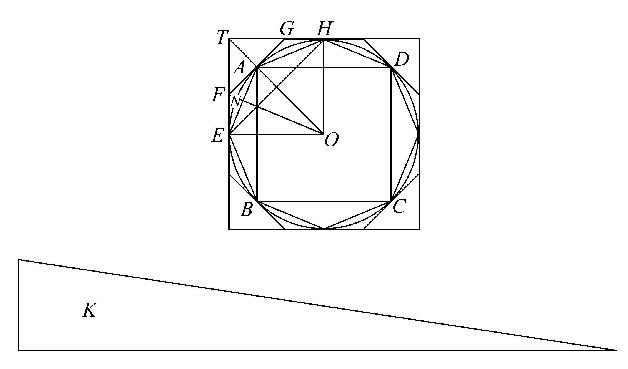
那么，如果圆面积不等于K，那么它必定大于或小于K．
Ⅰ.如果可能，设圆面积大于K．
设圆的内接正方形为ABCD，平分弧AB、BC、CD、DA．然后再等分（如果需要）其一半，继续分下去，直至以分点为顶点的内接多边形边上的弓形面积之和小于圆面积与K的差． ［Eucl.ⅹ.1］
这样多边形面积大于K．
设AE是它的任意一边，且由圆心O作ON垂直AE．
则ON小于圆的半径，即小于K中夹直角的一边，且多边形的周长小于圆的周长，即小于K中夹直角的另一边．
所以，多边形的面积小于K；这与上述推论矛盾．
故圆的面积不大于K．
Ⅱ.如果可能，设圆的面积小于K．
作圆的外切正方形，设其切圆于点E，H的两相邻边交于T，平分相邻两切点间的弧且在分点上作切线，设A是弧EH的中点，且FAG为A上的切线．
则角TAG是一个直角．
故 TG＞GA
＞GH.
于是三角形FTG的面积大于TEAH面积的一半．
类似地，如果弧AH被平分且在分点作切线，就可以从面积GAH[1]截出一个大于它的一半的面积．
如此，继续这种作法，最终将作出一个外切多边形，在它与圆之间所夹图形的面积小于K与圆面积之差． ［Eucl.ⅹ.1］
这样一来，多边形面积小于K．
现在，由O作多边形任意一边的垂线，它等于圆的半径，这时多边形的周长大于圆的周长，于是得到多边形的面积大于三角形K；这是不可能的．
所以，圆面积不小于K．
因而，圆面积既不大于又不小于K，所以圆面积就等于K．
命题2 一个圆面积比它的直径上的正方形如同11：14．
［这个命题的原文是不能令人满意的，阿基米德没有把它放在命题3之前，因为这个近似值要依赖于那个命题的结论．］
命题3 任何一个圆周与它的直径的比小于 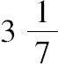 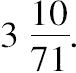
［鉴于源自阿基米德这命题算术内容中值得注意的一些问题，当它再一次出现时，必须小心区分原文中的具体步骤，这是来自一些（多为欧托西乌斯（Eutocius）提供的）中间步骤——为使推导容易些而方便给出的．从而，所存在原文中没出现的步骤被包含在方括号中，为的是能清楚看到阿基米德省去实际计算到什么程度而只是给出结果．可以注意到他给出两个
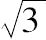
的近似分数（一个小于，另一个大于实际值）而没有解释是如何得到它们的．同样，一些不是完全平方的大数的平方根也直接给出了其近似值．这些近似值及希腊算术推导，一般可在ch.iv引论中的讨论找到．］Ⅰ.设AB是任意圆的直径，O是它的中心，AC是过A的切线；设角AOC是直角的三分之一．
则 OA：AC［＝：1］＞265：153， （1）
又 OC：CA［＝2：1］＝306：153， （2）
首先，作OD二等分角AOC且交AC于D．
现在 CO：OA＝CD：DA. ［Eucl.ⅵ.3］
因此 ［（CO+OA）：OA＝CA：DA，或者］
（CO+OA）：CA＝OA：AD．
所以 ［由（1）和（2）］
OA：AD＞571＞153， （3）
故 OD2：AD2［＝（OA2+AD2）：AD2
＞（5712+1532）：1532］
＞349450：23409，
因此OD：DA＞
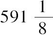
：153. （4）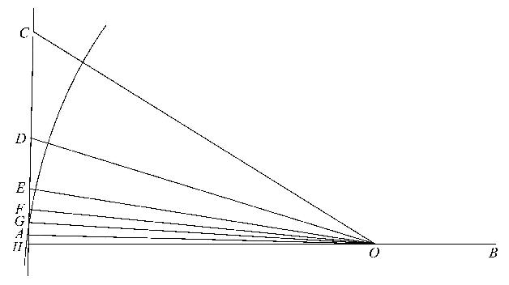
其次，设OE二等分角AOD，交AD于E．
［则 DO：OA＝DE：EA，
因此 （DO+OA）：DA＝OA：AE］.
所以
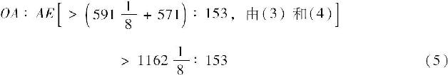
［由此可得
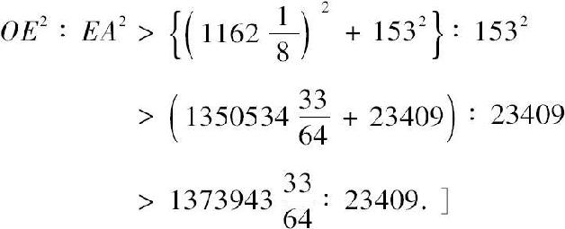
故 OE：EA＞
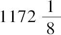
：153. （6）第三，设OF二等分角AOE且交AE于F．
从而，我们可以得出结论［对应于（3）和（5）］．
得
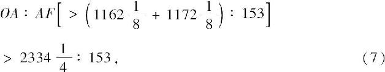
［所以
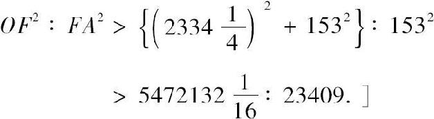
故
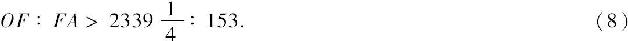
第四，设OG二等分角AOF，交AF于G．
我们得到
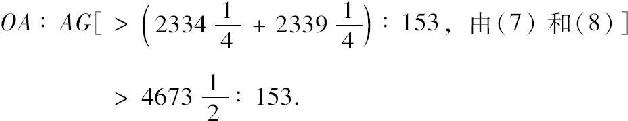
而角AOC是直角的三分之一，将它经四次二等分而得到
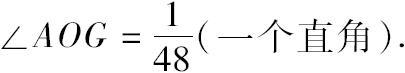
在边OA的另一侧作角AOH等于角AOG，延长GA交OH于H．
则∠GOH＝
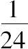
（一个直角）．那么GH是已知圆的96边外切正多边形的一边．
又因为 OA：AG＞
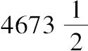
：153，这里 AB＝2OA，GH＝2AG，
得出
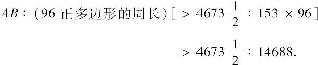
但是
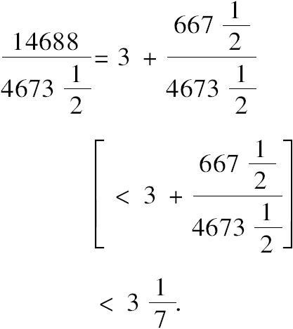
所以圆的周长（小于多边形的周长）更小于
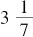
乘直径AB．Ⅱ.设AB是圆的直径，且设AC交圆于C，作角CAB等于直角的三分之一，连接BC．
则 AC：CB［＝
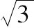
：1］＜1351：780．首先，设AD二等分角BAC且交BC于d，交圆于D，连接BD．
则 ∠BAD＝∠dAC
＝∠dBD.
且在D，C的角都是直角．
可得三角形ADB，［ACd］，BDd是相似的．
所以 AD：DB＝BD：Dd
［＝AC：Cd］
＝AB：Bd ［Eucl.vi，3］
＝（AB+AC）：（Bd+Cd）
＝（AB+AC）：BC
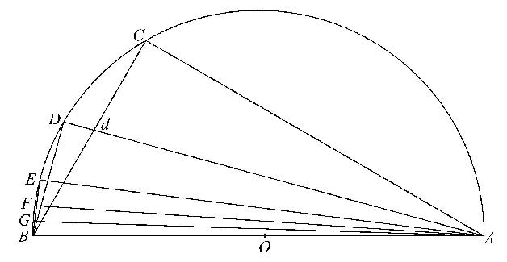
或 （BA+AC）：BC＝AD：DB．
［但是 AC：CB＜1351：780，由以上，
这时 BA：BC＝2：1
＝1560：780，
所以 AD：DB＜2911：780.］ （1）
［故 AB2：BD2＜（29112+7802）：7802
＜9082321：608400.］
这样 AB：BD＜
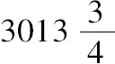
：780. （2）其次，设AE二等分角BAD，交圆于E；且连接BE．
那么我们证明，用与前边相同的方法，
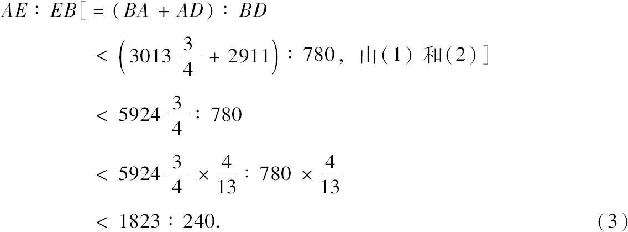
［故 AB2：BE2＜（18232+2402）：2402
＜3380929：57600.］
所以 AB：BE＜
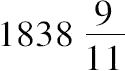
：240. （4）第三，设AF二等分角BAE，交圆于F.
这样
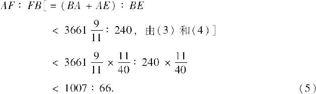
［得 AB2：BF2＜（10072+662）：662
＜1018405：4356.］
所以 AB：BF＜
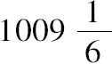
：66. （6）第四，设角BAF被AG二等分，交圆于G．
则
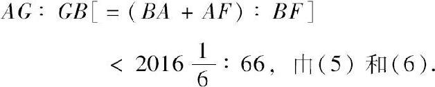
［又
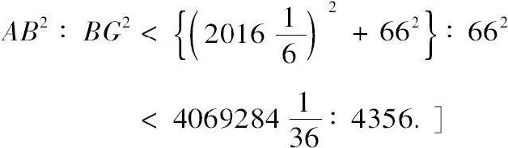
所以 AB：BG＜
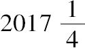
：66.由此
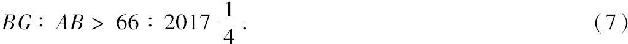
［现在，角BAG是把角BAC，或者把直角的三分之一，经四次二等分而得到的，等于一个直角的四十八分之一．
这样在中心对着BG的角是
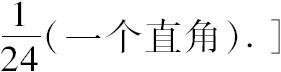
所以BG是内接正96边形的一个边．
由（7）得到多边形的周长：AB＞[96×66：
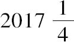
]＞6336：，
且
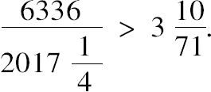
进一步得到圆的周长大于
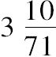
乘直径．这样圆周与直径的比
小于
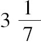
而大于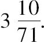
[1]GAH是由GA、GH和弧AH所围成．